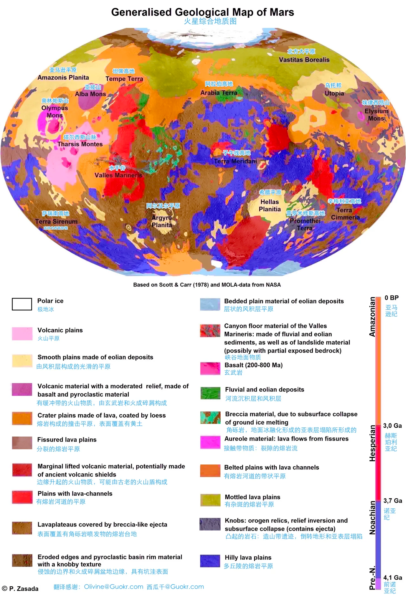
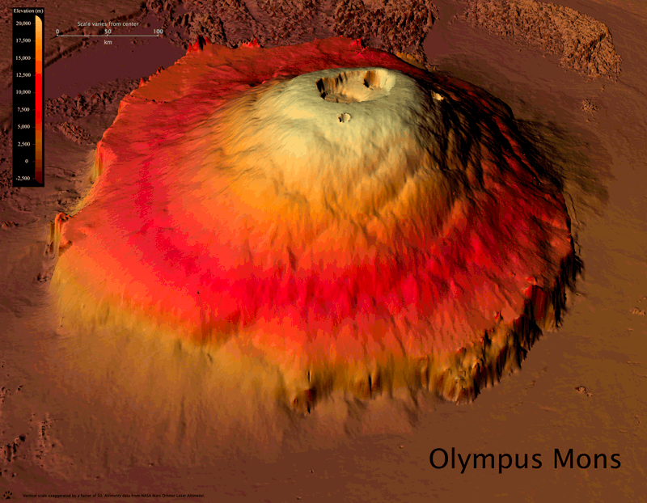
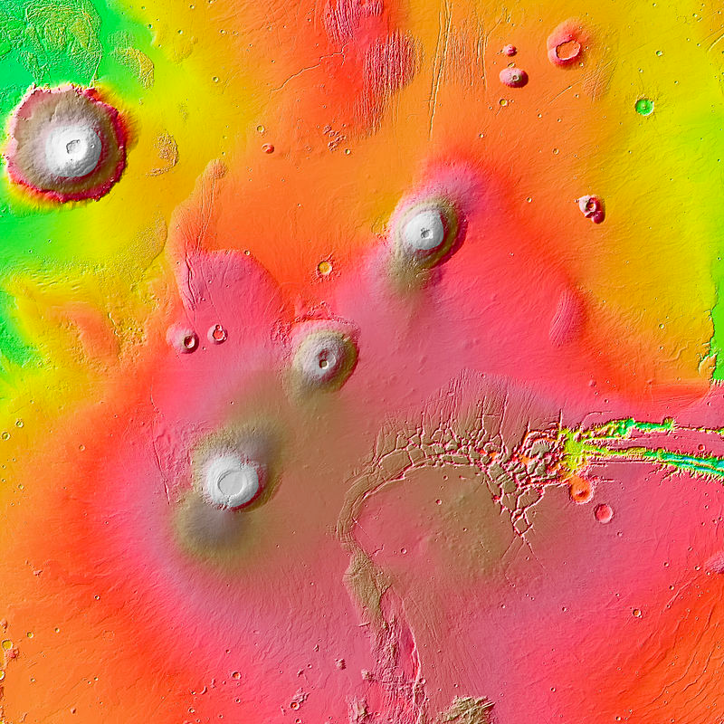
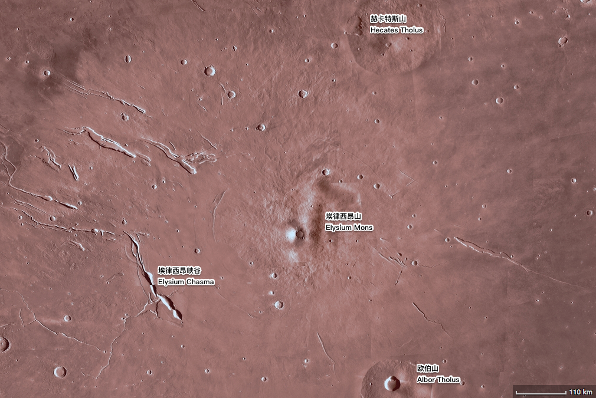
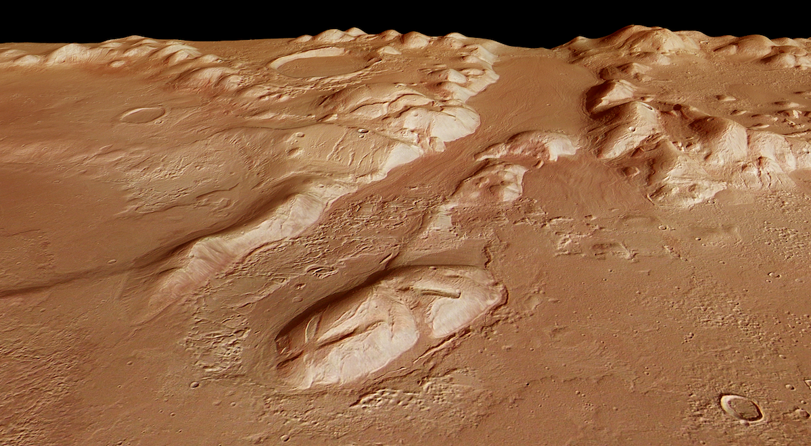
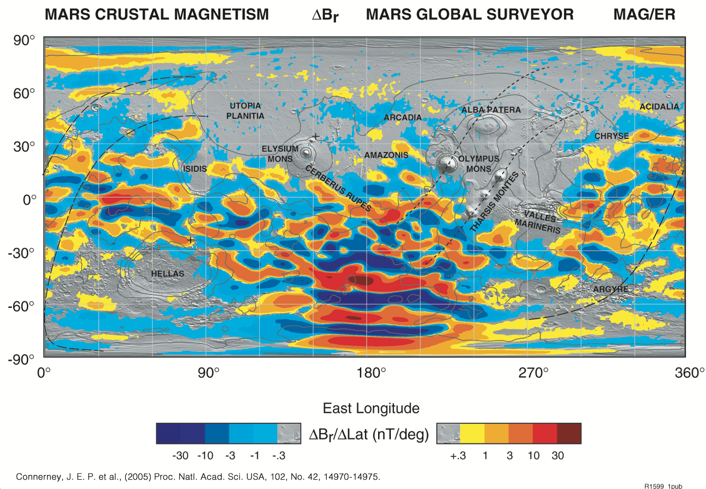
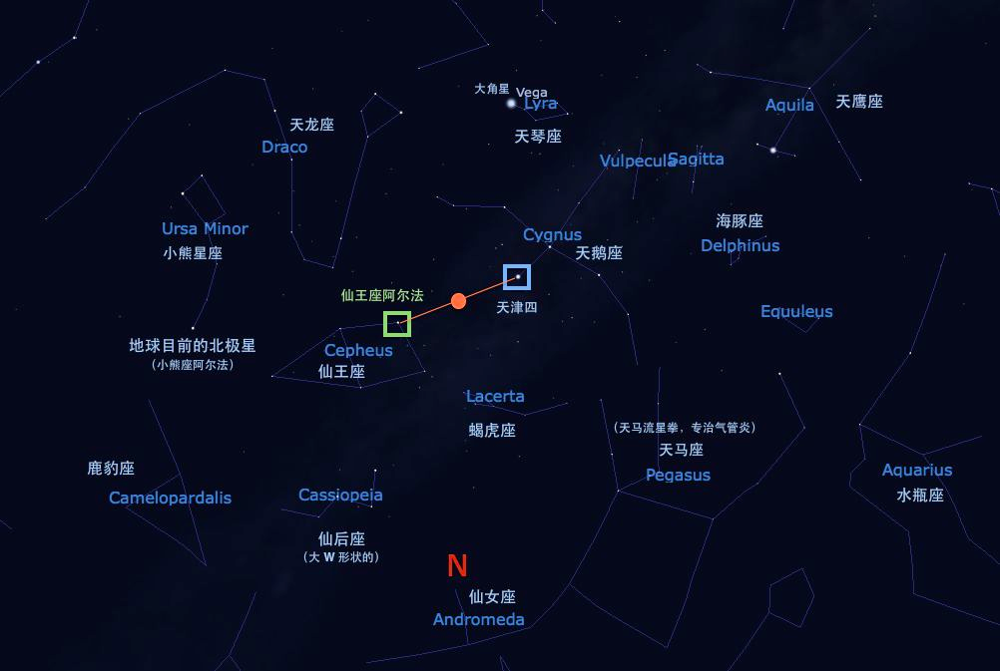

火星地理¤

由 @星际移民中心 翻译自 Wikipedia 。按照原图片的要求，翻译之后图片使用 Creative Commons Attribution-Share Alike 3.0 Unported 协议共享。原作者为 Patrick Zasada 。
火星上有趣的地理位置¤
奥林帕斯山—火星最高的山，太阳系第二高峰

来源：HiRISE Mars Digital Elevation Models: Difficult to Build, Easy on the Eye. In: astroengine.com [Internet]. 31 Dec 2008 [cited 15 Jan 2023]. Available: https://astroengine.com/2008/12/31/hirise-digital-elevation-models-difficult-to-build-easy-on-the-eye/#jp-carousel-2874

来源：Olympus Mons. (2022, November 27). In Wikipedia. https://en.wikipedia.org/wiki/Olympus_Mons

来源：Tharsis Montes. (2022, May 21). In Wikipedia. https://en.wikipedia.org/wiki/Tharsis_Montes
从火星高空看，水手峡谷赫然横在火星北半球，就像火星的一道疤痕。

来源：NASA/JPL-Caltech

来源：NASA/JPL
该山系长达 1,352.0 公里，甚为壮观。


来源：Hellas Planitia. (2022, May 22). In Wikipedia. https://en.wikipedia.org/wiki/Hellas_Planitia
火星上的洞穴¤
火星磁场¤
火星本身没有活动核心带来的磁场，但是火星表面有一些剩余磁场，尤其是南半球有约 \(22 \mathrm{nT}\) 的磁场。作为对比，地球的磁场大约在 \(25 \sim 65 \mathrm{\mu T}\)，也就是说地球磁场要高于火星约 1000 倍。
火星磁场地图

来源：NASA. In: New Map Provides More Evidence Mars Once Like Earth [Internet]. [cited 15 Jan 2023]. Available: https://www.nasa.gov/centers/goddard/news/topstory/2005/mgs_plates.html
火星星空¤
在火星上利用星空找到北极。

火星卫星¤
只要没有尘暴，日夜都可以清楚看到两颗火卫，野外迷路可以用来导航，并估计自己的经纬度。
扩展阅读¤
星际移民中心写过一篇有趣的火星生存指南。
-
The Caves of Mars. In: U.S. Geological Survey [Internet]. [cited 15 Jan 2023]. Available: https://www.usgs.gov/news/caves-mars ↩
-
Mars Global Cave Candidate Catalog (MGC^3) v1 Cushing. In: USGS Astrogeology Science Center [Internet]. [cited 15 Jan 2023]. Available: https://astrogeology.usgs.gov/search/map/Mars/MarsCaveCatalog/mars_cave_catalog ↩
-
HiRISE. In: New View of Dark Pit on Arsia Mons (PSP_004847_1745) [Internet]. [cited 15 Jan 2023]. Available: https://hirise.lpl.arizona.edu/PSP_004847_1745 ↩